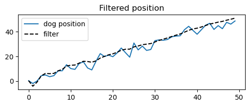
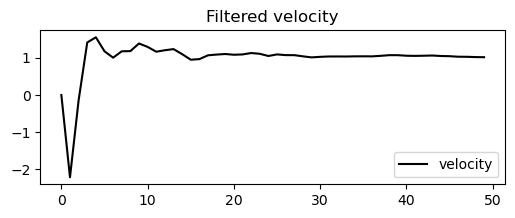

Kalman Filter¶
[1]:
import matplotlib.pyplot as plt
import jax
import jax.numpy as jnp
import jax.scipy as jsp
from filterjax import KalmanFilter, KalmanParams
%load_ext autoreload
%autoreload 2
[2]:
class DogSensor:
def __init__(self, key, x0=0, velocity=1, noise=0.0):
self.key = key
self.x = jnp.array(x0)
self.velocity = jnp.array(velocity)
self.noise = jnp.sqrt(noise)
def sense(self, shape: tuple = (1,)):
x = []
for _ in range(shape[0]):
self.x += self.velocity
x.append(self.x)
return jnp.array(x) + jax.random.normal(self.key, shape) * self.noise
[3]:
movement = 1
movement_error = 2
sensor_error = 10
pos = (0, 500)
key = jax.random.PRNGKey(0)
dog = DogSensor(key, x0=pos[0], velocity=movement, noise=sensor_error)
measurements = dog.sense((50,))
[4]:
def Q_DWPA(dim, dt=1., sigma=1.):
assert dim == 2 or dim == 3
if dim == 2:
Q = jnp.array([[.25*dt**4, .5*dt**3],
[ .5*dt**3, dt**2]], dtype=float)
else:
Q = jnp.array([[.25*dt**4, .5*dt**3, .5*dt**2],
[ .5*dt**3, dt**2, dt],
[ .5*dt**2, dt, 1]], dtype=float)
return Q * sigma
[20]:
params = KalmanParams(
F = jnp.array([[1, 1], [0, 1]]),
H = jnp.array([[1, 0]]),
Q = Q_DWPA(2, sigma=0.),
R = jnp.eye(1) * 5,
P = jnp.eye(2) * 500.,
m = jnp.array([0., 0.])
)
[31]:
kf = KalmanFilter(dim_m=2, dim_y=1)
params = kf.initialize(params)
posterior = kf.filter(params, measurements)
pos = posterior.mean[:, 0]
velocity = posterior.mean[:, 1]
[37]:
plt.figure(figsize=(6, 2))
plt.plot(jnp.arange(0, len(measurements), 1), measurements, label="dog position")
plt.plot(
jnp.arange(0, len(measurements), 1), pos, label="filter", linestyle="--",
color="black"
)
plt.title("Filtered position")
plt.legend(loc="best")
plt.show()

[38]:
plt.figure(figsize=(6, 2))
plt.plot(
jnp.arange(0, len(measurements), 1), velocity, label="velocity", linestyle="-",
color="black"
)
plt.title("Filtered velocity")
plt.legend(loc="best")
plt.show()
